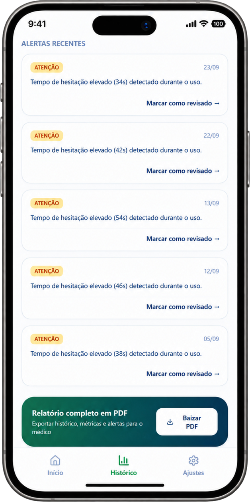
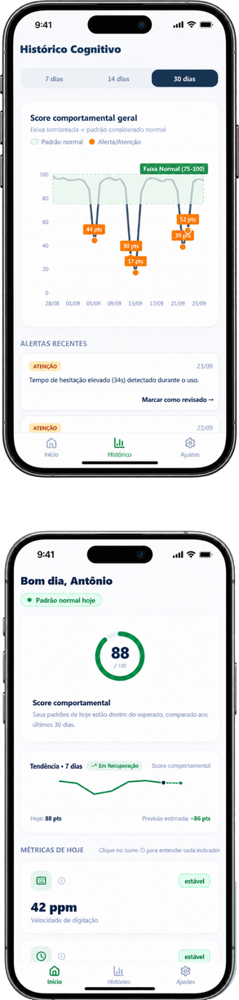

Mudamos todos os dias.
Mas e quando uma mudança pode ser um sinal?
O Íris utiliza padrões de interação cotidiana com o celular para identificar alterações comportamentais que podem estar associadas a mudanças cognitivas.
E se o seu celular percebesse uma mudança antes de você?
A proposta é acompanhar mudanças sutis em relação ao padrão habitual de cada pessoa, identificando alterações que poderiam passar despercebidas no dia a dia.
Seus hábitos digitais revelam padrões imperceptíveis

Como o Íris funciona?
- 01
Uso cotidiano
Você utiliza o celular normalmente, sem precisar mudar seus hábitos ou sua rotina.
- 02
Coleta de métricas
A interação cotidiana com o celular é traduzida em métricas de uso.
- 03
Análise de padrões
Os dados são analisados ao longo do tempo para compreender o padrão habitual de cada pessoa.
- 04
Identificação de alterações
Mudanças relevantes em relação ao padrão habitual do próprio usuário são identificadas e sinalizadas.
- 05
Sinalização preventiva
Ao identificar alterações relevantes, o Íris pode sugerir ao usuário ou responsável a realização de uma avaliação profissional.
Perceber antes pode fazer diferença
Antes de uma doença ser identificada, podem aparecer sinais sutis e evoluir até se tornarem perceptíveis o suficiente para motivar uma investigação.
Para condições em que a evolução da doença e o momento de início do tratamento são determinantes, esse intervalo importa.

O Íris não realiza diagnósticos.
Ele encurta o caminho até a avaliação médica.
Um novo olhar
para a prevenção
O Íris amplia o olhar para aquilo que costuma passar despercebido.
Nossa visão é transformar padrões sutis de interação com o celular em um novo parâmetro de acompanhamento, capaz de oferecer aos profissionais de saúde uma nova fonte de informação para acompanhamento e investigação.
Com a evolução do projeto, novos indicadores, bases de dados e modelos de análise poderão ampliar a capacidade do Íris de reconhecer padrões, tornando suas análises cada vez mais precisas e abrangentes.